CE103 Algorithms and Programming I¶
Week-2¶
Fall Semester, 2021-2022¶
Algorithm Basics¶
Flowgorithm (1)¶
Flowgorithm (2)¶
- Main Window

Flowgorithm (3)¶
- Console Window
- The classic method to interact with the computer is to use the "Console". Flowgorithm attempts to make it look like a typical instant messenger window. The "chat bubbles" are color coded to match the Input and Output shapes used in the flowchart. If you don't want to use the chat bubbles, you can also toggle between them and the classical plain text.
Flowgorithm (4)¶
- Console Window

Flowgorithm (5)¶
- Source Code Viewer Window
- The Source Code Viewer can convert your flowchart to several major programming languages. So, if you planning to learn a high-level language, then this feature should help you along the way.
Flowgorithm (6)¶
- Source Code Viewer Window

Flowgorithm (7)¶
- Variable Watch Window
- The variable watch window is used to keep track of how your variables are changing as your program executes. Each variable is color-coded based on its data type. At a glance, you can tell exactly what type of data is being stored - and catch where you may want to use a different data type.
Flowgorithm (8)¶
- Variable Watch Window
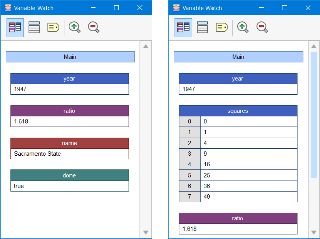
Flowgorithm (8)¶
- More Resources for Flowgorithm
- Flowgorithm Tutorial - TestingDocs.com
Pseudocode (1)¶
-
Algorithm design language
Introduction to Analysis of Algorithms¶
-
In this course, we will learn how to code with several development environments and next term we will see an analysis of algorithms in detail.
-
This topic is covered in the following link:
Programming Environment Setup and Configuration¶
- Programming life is not about only learning how to code. Mostly you need to use several code development environments and you need to learn how to use them efficiently.
C / C++ Environment and Development¶
DevCpp (Install / Compile / Run / Debug) (1)¶
- Download DevC++ IDE from the following link
- https://www.bloodshed.net/
DevCpp (Install / Compile / Run / Debug) (2)¶
- Open DevC++ IDE for C Project Generation
Open File->New->Project

DevCpp (Install / Compile / Run / Debug) (3)¶
Select Console Application from Basic tab and with C Project Option and write a project name such as "Hello" then press OK
Select a folder and save Hello.dev project file.
DevCpp (Install / Compile / Run / Debug) (4)¶
- You will see a sample main with an empty body

DevCpp (Install / Compile / Run / Debug) (5)¶
#include <stdio.h>
#include <stdlib.h>
/* run this program using the console pauser or add your own getch, s,ystem("pause") or input loop */
int main(int argc, char *argv[]) {
retAdd 0;
}
DevCpp (Install / Compile / Run / Debug) (6)¶
- Add the following line in the main function. This will write "Hello, World!" on the screen and then wait for a keypress to exit from the application
#include <stdio.h>
#include <stdlib.h>
/* run this program using the console pauser or add your own getch, system("pause") or input loop */
int main(int argc, char *argv[]) {
printf("Hello, World!");
getchar();
return 0;
}
DevCpp (Install / Compile / Run / Debug) (7)¶
- Then save the file

DevCpp (Install / Compile / Run / Debug) (8)¶
- Use from menu
Execute->Compile F5to generateHello.exe

DevCpp (Install / Compile / Run / Debug) (9)¶
- You can find the generated
Hello.exepath from Compile.log as follow. Check the Output Filename
Compiling project changes...
--------
- Project Filename: E:\UgurCoruh\RTEU\Lectures\2021-2022 Güz CE103 - Algorithms and Programming I\Lectures\ce103-algorithms-and-programming-I\Week-2\devcpp-hello-world-apps\Hello.dev
- Compiler Name: TDM-GCC 4.9.2 64-bit Release
Building makefile...
--------
- Filename: E:\UgurCoruh\RTEU\Lectures\2021-2022 Güz CE103 - Algorithms and Programming I\Lectures\ce103-algorithms-and-programming-I\Week-2\devcpp-hello-world-apps\Makefile.win
Processing makefile...
--------
- Makefile Processor: C:\Program Files (x86)\Dev-Cpp\MinGW64\bin\mingw32-make.exe
- Command: mingw32-make.exe -f "E:\UgurCoruh\RTEU\Lectures\2021-2022 Güz CE103 - Algorithms and Programming I\Lectures\ce103-algorithms-and-programming-I\Week-2\devcpp-hello-world-apps\Makefile.win" all
gcc.exe -c main.c -o main.o -I"C:/Program Files (x86)/Dev-Cpp/MinGW64/include" -I"C:/Program Files (x86)/Dev-Cpp/MinGW64/x86_64-w64-mingw32/include" -I"C:/Program Files (x86)/Dev-Cpp/MinGW64/lib/gcc/x86_64-w64-mingw32/4.9.2/include"
gcc.exe main.o -o Hello.exe -L"C:/Program Files (x86)/Dev-Cpp/MinGW64/lib" -L"C:/Program Files (x86)/Dev-Cpp/MinGW64/x86_64-w64-mingw32/lib" -static-libgcc
Compilation results...
--------
- Errors: 0
- Warnings: 0
- Output Filename: E:\UgurCoruh\RTEU\Lectures\2021-2022 Güz CE103 - Algorithms and Programming I\Lectures\ce103-algorithms-and-programming-I\Week-2\devcpp-hello-world-apps\Hello.exe
- Output Size: 128,103515625 KiB
- Compilation Time: 2,13s
DevCpp (Install / Compile / Run / Debug) (10)¶
- Then you can run with
Execute->Run F10or DirectlyCompile&Run F11

DevCpp (Install / Compile / Run / Debug) (11)¶
for debugging operations, just change the code and add more statements as follow
#include <stdio.h>
#include <stdlib.h>
/* run this program using the console pauser or add your getch, system(",pause") or input loop */
int main(int argc, char *argv[]) {
printf("Hello, World! Step-1\n");
printf("Hello, World! Step-2\n");
printf("Hello, World! Step-3\n");
printf("Hello, World! Step-4\n");
printf("Hello, World! Step-5\n");
printf("Hello, World! Step-6\n");
getchar();
return 0;
}
DevCpp (Install / Compile / Run / Debug) (12)¶
Click on line numbers and add breakpoints for the debugger. This red point will be debugger stop points

DevCpp (Install / Compile / Run / Debug) (13)¶
- In the menu section, select the compiler with debug option

DevCpp (Install / Compile / Run / Debug) (14)¶
- Compile application with debugging setting and in Execute Section use Debug F5 to start debugging

DevCpp (Install / Compile / Run / Debug) (15)¶
- The debugger will stop at the breakpoint at the debug point (blue line)

DevCpp (Install / Compile / Run / Debug) (16)¶
- Moving to the next statement can be done via control buttons or shortcuts

DevCpp (Install / Compile / Run / Debug) (17)¶
-Press F8to step-by-step continue
- Then go to
Project Options -> Compiler -> Linkerand set Generate debugging information to "yes", and make sure you are not using any optimization options (they're not good for debug mode). Also, check the Parameters tab, and make sure you don't have any optimization options (like-O2or-O3, but-O0is ok because it means no optimization) or strip option (-s).
DevCpp (Install / Compile / Run / Debug) (18)¶
- After that, do a full rebuild (
Ctrl-F11), then set a breakpoint(s) where you want the debugger to stop (otherwise it will just run the program). To set a breakpoint on a line, just click on the gutter (the gray band on the left), or pressCtrl-F5.
DevCpp (Install / Compile / Run / Debug) (19)¶
- Now you are ready to launch the debugger, by pressing F8 or clicking the debug button. If everything goes well, the program will start, and then stop at the first breakpoint. Then you can step through the code, entering function calls, by pressing
Shift-F7or the "step into" button, or stepping over the function calls, by pressingF7or the "next step" button. You can pressCtrl-F7or the "continue" button to continue execution till the next breakpoint. At any time, you can add or remove breakpoints.
DevCpp (Install / Compile / Run / Debug) (20)¶
When the program stopped at a breakpoint and you are stepping through the code, you can display the values of various variables in your program by putting your mouse over them, or you can display variables and expressions by pressing F4or the "add watch" button and typing the expression.
DevCpp (Install / Compile / Run / Debug) (21)¶
Code Blocks (Install / Compile / Run / Debug) (1)¶
Download Code Blocks from the following link
Binary releases - Code::Blocks
Code Blocks (Install / Compile / Run / Debug) (2)¶
Open Code Blocks and
Select File->New->Project

Code Blocks (Install / Compile / Run / Debug) (3)¶
Select Console Application
Click Next from Opening Window

Code Blocks (Install / Compile / Run / Debug) (4)¶
Select C for Sample Project

Code Blocks (Install / Compile / Run / Debug) (5)¶
Write a project name and title also set a project folder

Code Blocks (Install / Compile / Run / Debug) (6)¶
Select a compiler for this project we selected GCC but you can select C compilers from the list. Set Debug and Release executable output folders.

Code Blocks (Install / Compile / Run / Debug) (7)¶
- After this wizard, you will have the following code
Code Blocks (Install / Compile / Run / Debug) (8)¶
Select Debug Build from the menu

Code Blocks (Install / Compile / Run / Debug) (9)¶
Run with Build and Run F9

Code Blocks (Install / Compile / Run / Debug) (10)¶
- You should see the following output

Code Blocks (Install / Compile / Run / Debug) (11)¶
- Add the following lines to your source code for debugging
#include <stdio.h>
#include <stdlib.h>
int main()
{
printf("Hello world! Step-1\n");
printf("Hello world! Step-2\n");
printf("Hello world! Step-3\n");
printf("Hello world! Step-4\n");
printf("Hello world! Step-5\n");
printf("Hello world! Step-6\n");
return 0;
}
Code Blocks (Install / Compile / Run / Debug) (12)¶
- and add breakpoints with
F5or mouse click

Code Blocks (Install / Compile / Run / Debug) (13)¶
- select
Debug->Start/Continueto start debugger

Code Blocks (Install / Compile / Run / Debug) (14)¶
- If you see the following error this is related to long or turkish characters including the path. Just move the project to a shorter path and try again
Setting breakpoints
Debugger name and version: GNU gdb (GDB) 8.1
Starting the debuggee failed: No executable specified, use `target exec'.
Debugger finished with status 0
Code Blocks (Install / Compile / Run / Debug) (15)¶
You will see the following yellow pointer for the debugger
Code Blocks (Install / Compile / Run / Debug) (16)¶
You can use the following menu or shortcuts for step-by-step debugging.

GCC/G++ Complier (MinGW) / Clang-cl (LLVM) (1)¶
Download and install MinGW or LLVM compiler (if you downloaded then skip this step)
-
MinGW installer (clang)
-
Download MinGW-w64 - for 32 and 64-bit Windows from SourceForge.net
-
If you have a problem try `Github`` builds
-
LLVM installer (gcc/g++)
-
Also use the following notes
GCC/G++ Complier (MinGW) / Clang-cl (LLVM) (2)¶
Open a console with "cmd" and test the following commands if commands are not recognized then set the system environment variable to add gcc and g++ executable paths to the path variable (add to both system and user path variable)
C:\Users\ugur.coruh>gcc --version
gcc (x86_64-win32-seh-rev0, Built by MinGW-W64 project) 8.1.0
Copyright (C) 2018 Free Software Foundation, Inc.
This is free software; see the source for copying conditions. There is NO
warranty; not even for MERCHANTABILITY or FITNESS FOR A PARTICULAR PURPOSE.
GCC/G++ Complier (MinGW) / Clang-cl (LLVM) (3)¶
- for
gcc.exe,g++.exeandgdb.exe
- for
clang.exe,lldb.exe
This folder path changes according to your setup
VSCode (Install / Compile / Run / Debug) (1)¶
Download Visual Studio Code from the following link
Download Visual Studio Code - Mac, Linux, Windows
VSCode (Install / Compile / Run / Debug) (2)¶
In this sample, you will find MinGW and LLVM compiler combinations for C and C++
Create a folder and enter this folder then open this folder with vscode by right click

VSCode (Install / Compile / Run / Debug) (3)¶
or enter the folder via console

write
VSCode (Install / Compile / Run / Debug) (4)¶
- This will open vscode for the current folder, (.) dot present current folder.
- You will see an empty folder in the right window

VSCode (Install / Compile / Run / Debug) (5)¶
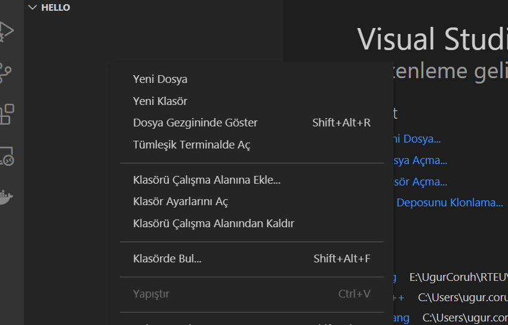
VSCode (Install / Compile / Run / Debug) (6)¶
- Create a
hello.cfile and write the following content
#include <stdio.h>
int main() {
// printf() displays the string inside quotation
printf("Hello, World!");
return 0;
}
VSCode (Install / Compile / Run / Debug) (7)¶
use CTRL+SHIFT+B (you should be on the source code section) to build a file

VSCode (Install / Compile / Run / Debug) (8)¶
Select GCCor CLANGfor this sample we can use GCC
You will see the output generated `Hello.exe``

VSCode (Install / Compile / Run / Debug) (9)¶
for debugging just put a breakpoint and build again

VSCode (Install / Compile / Run / Debug) (10)¶
- after building for debug press
CTRL+SHIFT+D(you should be in the source code section)and in the right window select createlaunch.json

VSCode (Install / Compile / Run / Debug) (11)¶
- from opening, window select
C++ GDB/LLDB

VSCode (Install / Compile / Run / Debug) (12)¶
- from the next opening, menu select
mingw-w64 gcc.exe
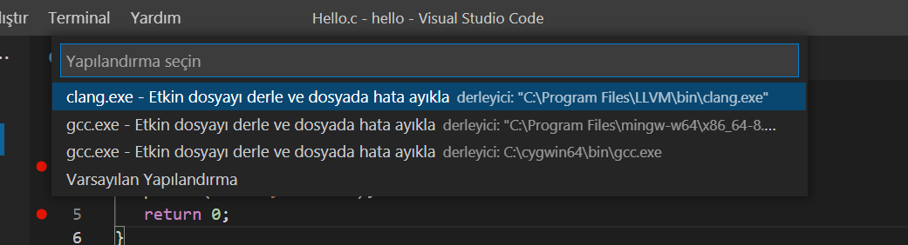
VSCode (Install / Compile / Run / Debug) (13)¶
this will run the debugger and you will see debug points activated

VSCode (Install / Compile / Run / Debug) (14)¶
then you can step-by-step debug your code.
the following task.json and launch.json automatically generated with your selections

VSCode (Install / Compile / Run / Debug) (15)¶
launch.json
{
// Olası öznitelikler hakkında bilgi edinmek için IntelliSense kullanın.
// Mevcut özniteliklerin açıklamalarını görüntülemek için üzerine gelin.
// Daha fazla bilgi için şu adresi ziyaret edin: https://go.microsoft.com/fwlink/?linkid=830387
"version": "0.2.0",
"configurations": [
{
"name": "gcc.exe - Etkin dosyayı derle ve dosyada hata ayıkla",
"type": "cppdbg",
"request": "launch",
"program": "${fileDirname}\\${fileBasenameNoExtension}.exe",
"args": [],
"stopAtEntry": false,
"cwd": "${fileDirname}",
"environment": [],
"externalConsole": false,
"MIMode": "gdb",
"miDebuggerPath": "C:\\Program Files\\mingw-w64\\x86_64-8.1.0-win32-seh-rt_v6-rev0\\mingw64\\bin\\gdb.exe",
"setupCommands": [
{
"description": "gdb için düzgün yazdırmayı etkinleştir",
"text": "-enable-pretty-printing",
"ignoreFailures": true
}
],
"preLaunchTask": "C/C++: gcc.exe etkin dosyayı derle"
}
]
}
VSCode (Install / Compile / Run / Debug) (16)¶
task.json
{
"tasks": [
{
"type": "cppbuild",
"label": "C/C++: gcc.exe etkin dosyayı derle",
"command": "C:\\Program Files\\mingw-w64\\x86_64-8.1.0-win32-seh-rt_v6-rev0\\mingw64\\bin\\gcc.exe",
"args": [
"-fdiagnostics-color=always",
"-g",
"${file}",
"-o",
"${fileDirname}\\${fileBasenameNoExtension}.exe"
],
"options": {
"cwd": "${fileDirname}"
},
"problemMatcher": ["$gcc"],
"group": {
"kind": "build",
"isDefault": true
},
"detail": "Hata Ayıklayıcısı tarafından oluşturulan görev."
}
],
"version": "2.0.0"
}
VSCode (Install / Compile / Run / Debug) (17)¶
- You can do the same thing for other compilers and C++ source codes. LLVM does not support debugging on vscode now.
for C++ VsCode you can check the following links
-
for Windows
-
for Linux
-
for WSL
VSCode (Install / Compile / Run / Debug) (18)¶
in the launch file if you start debugging with F5
(you can select debugger with CTRL+SHIFT+P and then write Debug and Selecting Configure Debugger Option)
VSCode (Install / Compile / Run / Debug) (19)¶
-
the following line will be your debugging application path
-
if you start debugging with
F5inHello.cfile this will set<Hello.c base path>/Hello.exe
VSCode (Install / Compile / Run / Debug) (20)¶
You should set this correct for both LLVMand GCC configuration in launch.json
Also you should set your installed debugger paths
for GCC
"miDebuggerPath": "C:\\Program Files\\mingw-w64\\x86_64-8.1.0-win32-seh-rt_v6-rev0\\mingw64\\bin\\gdb.exe",
for LLVM
for more details please check the sample source codes.
Visual Studio Code Extension List (1)¶
My Extension List
- Listing Installed Extensions
Following topic can help you
How can you export the Visual Studio Code extension list? - Stack Overflow
Visual Studio Code Extension List (2)¶
code --install-extension 2gua.rainbow-brackets
code --install-extension aaron-bond.better-comments
code --install-extension abusaidm.html-snippets
code --install-extension ACharLuk.easy-cpp-projects
code --install-extension chris-noring.node-snippets
code --install-extension cschlosser.doxdocgen
code --install-extension csholmq.excel-to-markdown-table
code --install-extension DaChuiOpenSource.FreeMind
code --install-extension dannysteenman.cloudformation-yaml-snippets
code --install-extension Dart-Code.dart-code
code --install-extension Dart-Code.flutter
code --install-extension digized.umple
code --install-extension DotJoshJohnson.xml
code --install-extension DougFinke.vscode-pandoc
code --install-extension dzhavat.bracket-pair-toggler
code --install-extension esbenp.prettier-vscode
code --install-extension formulahendry.dotnet
code --install-extension franneck94.c-cpp-runner
code --install-extension gcc.
Visual Studio Code Extension List (3)¶
vscode-plugin-billionbottle
code --install-extension geeklearningio.graphviz-markdown-preview
code --install-extension geyao.html-snippets
code --install-extension GitHub.copilot-nightly
code --install-extension GrapeCity.gc-excelviewer
code --install-extension Ionide.Ionide-fsharp
code --install-extension ionut-botizan.vscode-cypher-ql
code --install-extension ipedrazas.kubernetes-snippets
code --install-extension JakeWilson.vscode-picture
code --install-extension James-Yu.latex-workshop
code --install-extension JasonMejane.base64viewer
code --install-extension jasonnutter.search-node-modules
code --install-extension jebbs.plantuml
code --install-extension jeff-hykin.better-cpp-syntax
code --install-extension Katacoda.vscode
code --install-extension KenDomino.Antlrvsix-vscode
code --install-extension l7ssha.tag-inserter
code --install-extension lolkush.quickstart
code --install-extension marp-team.marp-vscode
code --install-extension mindaro-dev.file-downloader
code --install-extension mindaro.mindaro
code --install-extension ms-azuretools.vscode-docker
code --install-extension MS-CEINTL.vscode-language-pack-tr
Visual Studio Code Extension List (4)¶
code --install-extension ms-dotnettools.csharp
code --install-extension ms-dotnettools.dotnet-interactive-vscode
code --install-extension ms-dotnettools.vscode-dotnet-pack
code --install-extension ms-dotnettools.vscode-dotnet-runtime
code --install-extension ms-kubernetes-tools.vscode-aks-tools
code --install-extension ms-kubernetes-tools.vscode-kubernetes-tools
code --install-extension ms-python.python
code --install-extension ms-python.vscode-pylance
code --install-extension ms-toolsai.jupyter
code --install-extension ms-toolsai.jupyter-keymap
code --install-extension ms-toolsai.jupyter-renderers
code --install-extension ms-vscode-remote.remote-containers
code --install-extension ms-vscode-remote.remote-ssh
code --install-extension ms-vscode-remote.remote-ssh-edit
code --install-extension ms-vscode-remote.remote-wsl
Visual Studio Code Extension List (5)¶
code --install-extension ms-vscode.azure-account
code --install-extension ms-vscode.brackets-keybindings
code --install-extension ms-vscode.brackets-pack
code --install-extension ms-vscode.cmake-tools
code --install-extension ms-vscode.cpptools
code --install-extension ms-vscode.cpptools-extension-pack
code --install-extension ms-vscode.cpptools-themes
code --install-extension ms-vscode.live-server
code --install-extension ms-vsliveshare.vsliveshare
code --install-extension oleg-shilo.cs-script
code --install-extension PascalReitermann93.vscode-yaml-sort
Visual Studio Code Extension List (6)¶
code --install-extension Pivotal.vscode-boot-dev-pack
code --install-extension Pivotal.vscode-concourse
code --install-extension Pivotal.vscode-manifest-yaml
code --install-extension Pivotal.vscode-spring-boot
code --install-extension PKief.material-icon-theme
code --install-extension platformio.platformio-ide
code --install-extension pranaygp.vscode-css-peek
code --install-extension redhat.fabric8-analytics
code --install-extension redhat.java
code --install-extension redhat.vscode-commons
code --install-extension redhat.vscode-xml
code --install-extension redhat.vscode-yaml
code --install-extension ritwickdey.LiveServer
code --install-extension sidthesloth.html5-boilerplate
code --install-extension TaodongWu.ejs-snippets
code --install-extension tht13.python
code --install-extension tomoki1207.pdf
code --install-extension twxs.cmake
code --install-extension vadimcn.vscode-lldb
Visual Studio Code Extension List (7)¶
code --install-extension VisualStudioExptTeam.intellicode-api-usage-examples
code --install-extension VisualStudioExptTeam.vscodeintellicode
code --install-extension vscjava.vscode-java-debug
code --install-extension vscjava.vscode-java-dependency
code --install-extension vscjava.vscode-java-pack
code --install-extension vscjava.vscode-java-test
code --install-extension vscjava.vscode-maven
code --install-extension vscjava.vscode-spring-boot-dashboard
code --install-extension vscjava.vscode-spring-initializr
code --install-extension walkme.HTML5-extension-pack
code --install-extension webfreak.debug
code --install-extension well-ar.plantuml
code --install-extension wildboar.asn1
code --install-extension Zignd.html-css-class-completion
Visual Studio Community Edition (Install / Compile / Run / Debug) (1)¶
- Download and install
Visual Studio Community Edition - Select All Development Environments from Installer.
Ücretsiz Geliştirici Yazılımları ve Hizmetleri - Visual Studio

Visual Studio Community Edition (Install / Compile / Run / Debug) (2)¶
- After installation open
Visual Studio2022` from the menu.

Visual Studio Community Edition (Install / Compile / Run / Debug) (3)¶
- The application will start...

Visual Studio Community Edition (Install / Compile / Run / Debug) (4)¶
- From Opening Window Select
Create a new project

Visual Studio Community Edition (Install / Compile / Run / Debug) (5)¶
-
There will be several options, you can review them.
-
Select
Windows,C++,Console Applicationfrom Combobox. -
Select
Console Application
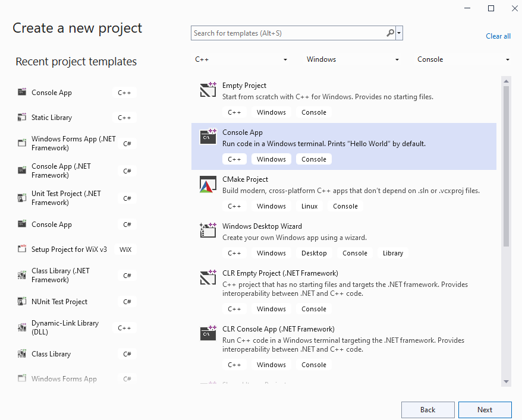
Visual Studio Community Edition (Install / Compile / Run / Debug) (6)¶
- Give a solution and project name.
- Select save location

Visual Studio Community Edition (Install / Compile / Run / Debug) (7)¶
- You will have C++ basic Hello World application.
Visual Studio Community Edition (Install / Compile / Run / Debug) (8)¶
- You will have C++ basic Hello World application.
// ConsoleApplication1.cpp : This file contains the 'main' function. Program execution begins and ends there.
//
#include <iostream>
int main()
{
std::cout << "Hello World!\n";
}
// Run program: Ctrl + F5 or Debug > Start Without Debugging menu
// Debug program: F5 or Debug > Start Debugging menu
// Tips for Getting Started:
// 1. Use the Solution Explorer window to add/manage files
// 2. Use the Team Explorer window to connect to source control
// 3. Use the Output window to see build output and other messages
// 4. Use the Error List window to view errors
// 5. Go to Project > Add New Item to create new code files, or Project > Add Existing Item to add existing code files to the project
// 6. In the future, to open this project again, go to File > Open > Project and select the .sln file
Visual Studio Community Edition (Install / Compile / Run / Debug) (9)¶
- We need to rename the file extension to
cfromcpp

Visual Studio Community Edition (Install / Compile / Run / Debug) (10)¶
- If you compile the source C compiler will be used.
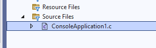
Visual Studio Community Edition (Install / Compile / Run / Debug) (11)¶
- We need to update our source for
Cas follows
// ConsoleApplication1.c : This file contains the 'main' function. Program execution begins and ends there.
//
#include <stdio.h>
int main(){
printf("Hello World!\n");
}
Visual Studio Community Edition (Install / Compile / Run / Debug) (12)¶
- We need to update our source for
Cas follows
Visual Studio Community Edition (Install / Compile / Run / Debug) (13)¶
- Put a breakpoint by clicking the following location. Breakpoints will be stop points for our debugging operations.

Visual Studio Community Edition (Install / Compile / Run / Debug) (14)¶
- Then select Debug configuration and according to your operating system select x64 or x86 configuration and click
Local Windows Debugger

Visual Studio Community Edition (Install / Compile / Run / Debug) (15)¶
- Update your source code as follow
// ConsoleApplication1.c : This file contains the 'main' function. Program execution begins and ends there.
//
#include <stdio.h>
int sum(int input1, int input2);
int main(){
int number = 5;
printf("Before Increment : %d\n",number);
number = sum(number, 5);
printf("After Increment : %d\n", number);
}
int sum(int input1, int input2){
return input1 + input2;
}
Visual Studio Community Edition (Install / Compile / Run / Debug) (16)¶
- Put the following breakpoints and run the debugger. On number, the variable pins the variable to see its value in real-time.

Visual Studio Community Edition (Install / Compile / Run / Debug) (17)¶
- Open Debug->Windows->Memory->Memory1 to see value in memory

Visual Studio Community Edition (Install / Compile / Run / Debug) (18)¶
- In the memory window copy variable name (number) with address operator (&) and then (&number) press enter.
Visual Studio Community Edition (Install / Compile / Run / Debug) (19)¶
- You can see its value in memory with hexadecimal form (
05 00 00 00)

Visual Studio Community Edition (Install / Compile / Run / Debug) (20)¶
- If you change value with pinned control your memory value and your current value will be updated. 20 in hexadecimal 0x14 (integer is 4 bytes length for this reason memory shows
14 00 00 00)


Visual Studio Community Edition (Install / Compile / Run / Debug) (21)¶
- If you close some windows such as solution explorer, and properties windows you can open them from the View menu.

Visual Studio Community Edition (Install / Compile / Run / Debug) (22)¶
- Solution and Projects have several configurations for each setup such as Release - x86, Release-x64, Debug- x86, and Debug-x64 you need to configure all of them for your requirements. You can access configurations by right-clicking to project and then selecting properties.

Visual Studio Community Edition (Install / Compile / Run / Debug) (23)¶
- Project properties has several settings

Notepad++ (Install / Compile ) (1)¶

- Please download Notepad++ from the following link
- Downloads | Notepad++
Notepad++ (Install / Compile ) (2)¶
Download and install MinGW or LLVM compiler (if you downloded then skip this step)
MinGW installer (gcc / g++)
- A complete runtime environment for gcc
- https://sourceforge.net/projects/mingw-w64/
- https://sourceforge.net/projects/mingw-w64/files/latest/download
- w64devkit is a portable C and C++ development kit for x64 (and x86) Windows.
- https://www.mingw-w64.org/downloads/#w64devkit
- Also, see the following notes
- https://www.hanshq.net/building-gcc.html
Notepad++ (Install / Compile ) (3)¶
LLVM installer (clang)
- Download
- https://releases.llvm.org/
- Also, use the following notes
- https://llvm.org/devmtg/2014-04/PDFs/Talks/clang-cl.pdf
- https://www.hanshq.net/clang-plugin-example.html
Notepad++ (Install / Compile ) (4)¶
Open a console with "cmd" and test the following commands if commands are not recognized then set the system environment variable to add gcc and g++ executable paths to the path variable (add to both system and user path variable)
C:\Users\ugur.coruh>gcc --version
gcc (x86_64-win32-seh-rev0, Built by MinGW-W64 project) 8.1.0
Copyright (C) 2018 Free Software Foundation, Inc.
This is free software; see the source for copying conditions. There is NO
warranty; not even for MERCHANTABILITY or FITNESS FOR A PARTICULAR PURPOSE.
Notepad++ (Install / Compile ) (5)¶
- Open system environments to update path variable for gcc/g++ and clang

Notepad++ (Install / Compile ) (6)¶
- Open "Environment Variables"

Notepad++ (Install / Compile ) (7)¶
- Select path variable from user section.

Notepad++ (Install / Compile ) (8)¶
- Select path variable from system section.

Notepad++ (Install / Compile ) (9)¶
- Update variables add
MinGWandLLVMto pathgcc.exeg++.execlang.exewill be in bin folders. Then we can run this commands from command line.

Notepad++ (Install / Compile ) (9)¶
- Update variables add
MinGWandLLVMto pathgcc.exeg++.execlang.exewill be in bin folders. Then we can run this commands from command line.

Notepad++ (Install / Compile ) (10)¶
- for
gcc.exe,g++.exeandgdb.exe
Notepad++ (Install / Compile ) (11)¶
- for
clang.exe,lldb.exewe will use the following path
Notepad++ (Install / Compile ) (12)¶
-
This folder paths changes according to your setup
-
Open
NppExecextension (install from extension manager if not exist)
Notepad++ (Install / Compile ) (13)¶
- Write the following commands in the box
NPP_SAVE // save current file
cd $(CURRENT_DIRECTORY) // go to directory of the current file
gcc -Wall -Wextra -Wpedantic -std=c++11 -o "$(NAME_PART)" "$(FILE_NAME)"

Notepad++ (Install / Compile ) (14)¶
-
Save the script as
gcc-buildand for more information check the following link -
You can modify or add multiple scripts for another task.
MSYS2¶
- Software Distribution and Building Platform for Windows
Vi/Vim (C/C++) for Windows (1)¶
- Vim is a command-line editor for programming
- Use the following links to download Vim for Windows
- https://github.com/vim/vim-win32-installer/releases
- download : vim online
Vi/Vim (C/C++) for Windows (2)¶
- Run setup to install the application on your computer.
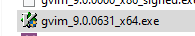
Vi/Vim (C/C++) for Windows (3)¶

Vi/Vim (C/C++) for Windows (4)¶
- Installation steps.

Vi/Vim (C/C++) for Windows (5)¶
- Installation steps.

Vi/Vim (C/C++) for Windows (6)¶
- Installation steps.

Vi/Vim (C/C++) for Windows (7)¶
- Installation steps.

Vi/Vim (C/C++) for Windows (8)¶
- Installation steps.

Vi/Vim (C/C++) for Windows (9)¶
- Installation steps.

Vi/Vim (C/C++) for Windows (10)¶
- Generated shortcuts on your desktop

Vi/Vim (C/C++) for Windows (11)¶
- Run
vim hello.con your command-line to open a c file with vim editor.
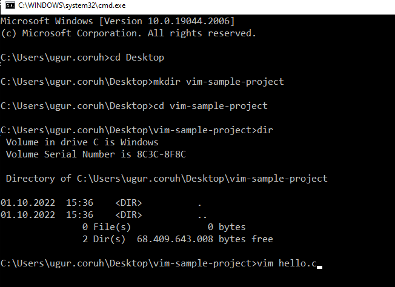
Vi/Vim (C/C++) for Windows (12)¶
- You will have the following editor.
- Use INSERT to change edit options.

Vi/Vim (C/C++) for Windows (13)¶
- Sample source code
#include <stdio.h>
int main()
{
char name[20];
printf("Enter Name:");
scanf("%s",name);
printf("Your name is %s",name);
return 0;
}
Vi/Vim (C/C++) for Windows (14)¶
- Write source code
- Press the
Escbutton to enter command mode - Then type
:wq. It will save the file and exit from Vim - w: write
- q: quit

Vi/Vim (C/C++) for Windows (15)¶
- compile source code with
gcc - link the objects and
- run executable
Vi/Vim (C/C++) for Windows (17)¶
- In the folder, you can find your executable.
hello.exe

Vi/Vim (C/C++) for Windows (16)¶
- compile, link and execute flow will be as follow;

Eclipse (C/C++) - Compile Only / Debugging Has Problem (1)¶
- Download and install Eclipse IDE from the following link
- Eclipse IDE for C/C++ Developers | Eclipse Packages
- Run Installer
- Select
Eclipse IDE for C/C++ Developers

Eclipse (C/C++) - Compile Only / Debugging Has Problem (2)¶
- Select Java Version and Installation Path

Eclipse (C/C++) - Compile Only / Debugging Has Problem (3)¶
- After installation you can LAUNCH eclipse IDE

Eclipse (C/C++) - Compile Only / Debugging Has Problem (4)¶

Eclipse (C/C++) - Compile Only / Debugging Has Problem (5)¶
- Select a workspace that your project will be saved
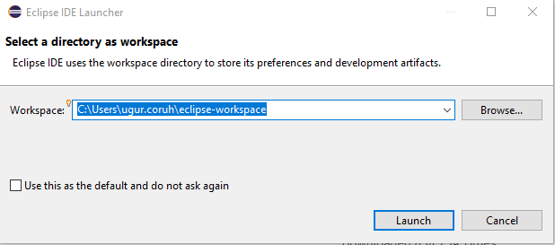
Eclipse (C/C++) - Compile Only / Debugging Has Problem (6)¶
- You can find your installation under your user folder

Eclipse (C/C++) - Compile Only / Debugging Has Problem (7)¶
- You can create shortcut to desktop for your working eclipse version.
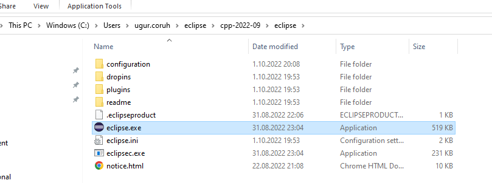
Eclipse (C/C++) - Compile Only / Debugging Has Problem (8)¶
- File -> New -> Project

Eclipse (C/C++) - Compile Only / Debugging Has Problem (9)¶
- Select C/C++ Project
Eclipse (C/C++) - Compile Only / Debugging Has Problem (10)¶
- Select C Managed Build, Eclipse CDT will do job for us.

Eclipse (C/C++) - Compile Only / Debugging Has Problem (11)¶
- Give project name and select a basic template executable with MinGW GCC.

Eclipse (C/C++) - Compile Only / Debugging Has Problem (12)¶
- Configura Basic Settings
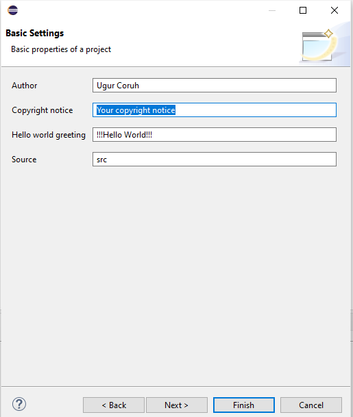
Eclipse (C/C++) - Compile Only / Debugging Has Problem (13)¶
- There are default Debug and Release configurations you can add your customized configurations from Advanced Settings.

Eclipse (C/C++) - Compile Only / Debugging Has Problem (14)¶
-
Project settings will be C Select Debug/Release configuration and then Build Application Project->Build All (Ctrl+B)
-
HelloWorldC.exe will be generated
gcc -O0 -g3 -Wall -c -fmessage-length=0 -o "src\\HelloWorldC.o" "..\\src\\HelloWorldC.c"
gcc -o HelloWorldC.exe "src\\HelloWorldC.o"
Eclipse (C/C++) - Compile Only / Debugging Has Problem (15)¶
-
Before build if you want to debug application select debug configuration, put your breakpoints and then Build application again.
-
Right click the generated executable Debug As -> Local C/C++ Application

Eclipse (C/C++) - Compile Only / Debugging Has Problem (16)¶
- Debugger will start and stop at breakpoint as follow.

Eclipse (C/C++) - Compile Only / Debugging Has Problem (16)¶
- Check debug control shortcuts and use them
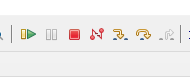
Eclipse (C/C++) - Compile Only / Debugging Has Problem (17)¶
- To watch variables use Expressions and Variables
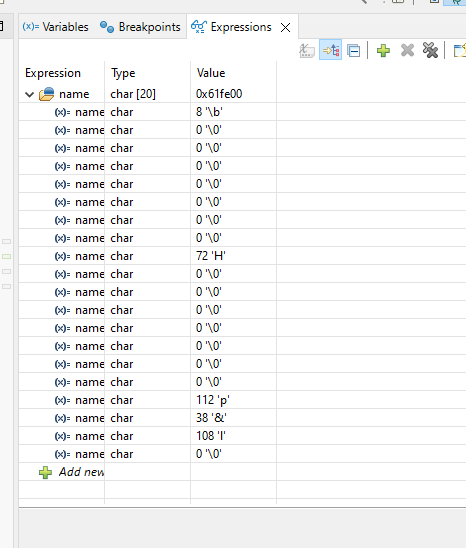
Eclipse (C/C++) - Compile Only / Debugging Has Problem (18)¶
Eclipse (C/C++) - Compile Only / Debugging Has Problem (19)¶
-
for more visit eclipse webpage
-
Effective Techniques for Debugging C & C++ | The Eclipse Foundation
Eclipse (C/C++) - Compile Only / Debugging Has Problem (20)¶
- Generate CMAKE project from new Project and Select CMake Project Template

Eclipse (C/C++) - Compile Only / Debugging Has Problem (21)¶
- Give project name

Eclipse (C/C++) - Compile Only / Debugging Has Problem (22)¶
- This will generate default C++ Hello World project
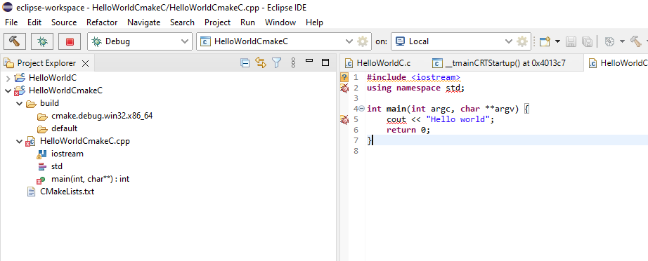
Eclipse (C/C++) - Compile Only / Debugging Has Problem (23)¶
- Build Project

Eclipse (C/C++) - Compile Only / Debugging Has Problem (24)¶
-
It will give following errors, for missing configurations. This errors are generated by CMAKE
-
Then clean and rebuild again.
Errors occurred during the build.
Errors running builder 'CDT Core Builder' on project 'HelloWorldCmakeC'.
Resource '/HelloWorldCmakeC/build/cmake.debug.win32.x86_64/compile_commands.json' does not exist.
Resource '/HelloWorldCmakeC/build/cmake.debug.win32.x86_64/compile_commands.json' does not exist.
Resource '/HelloWorldCmakeC/build/cmake.debug.win32.x86_64/compile_commands.json' does not exist.
Resource '/HelloWorldCmakeC/build/cmake.debug.win32.x86_64/compile_commands.json' does not exist.
Eclipse (C/C++) - Compile Only / Debugging Has Problem (25)¶

Eclipse (C/C++) - Compile Only / Debugging Has Problem (26)¶
- After this operation first Clean project from Project menu and then Build All again

Eclipse (C/C++) - Compile Only / Debugging Has Problem (27)¶
Eclipse (C/C++) - Compile Only / Debugging Has Problem (28)¶

Eclipse (C/C++) - Compile Only / Debugging Has Problem (29)¶
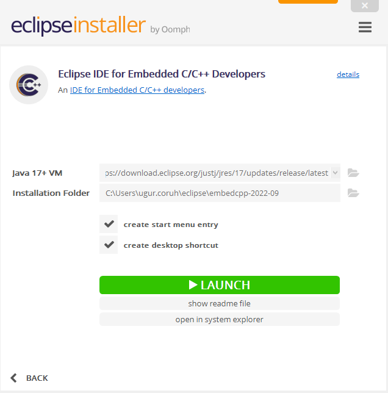
Netbeans (C/C++) - Manuel Build/Clean/Run Command Setting Not Good Option for C/C++ Development (1)¶

Netbeans (C/C++) - Manuel Build/Clean/Run Command Setting Not Good Option for C/C++ Development (2)¶
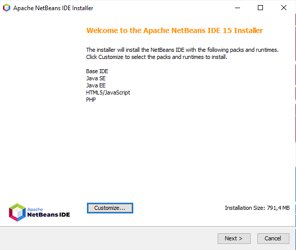
Netbeans (C/C++) - Manuel Build/Clean/Run Command Setting Not Good Option for C/C++ Development (3)¶

Netbeans (C/C++) - Manuel Build/Clean/Run Command Setting Not Good Option for C/C++ Development (4)¶

Netbeans (C/C++) - Manuel Build/Clean/Run Command Setting Not Good Option for C/C++ Development (5)¶

Netbeans (C/C++) - Manuel Build/Clean/Run Command Setting Not Good Option for C/C++ Development (6)¶

Netbeans (C/C++) - Manuel Build/Clean/Run Command Setting Not Good Option for C/C++ Development (7)¶
Netbeans (C/C++) - Manuel Build/Clean/Run Command Setting Not Good Option for C/C++ Development (8)¶

Turbo C/C++ (1)¶
Download Turbo.C.3.2.zip

Turbo C/C++ (2)¶

Cmake (C++/C) (1)¶
CMake (http://www.cmake.org/) is a program which generates the Makefiles used by Make.
Cmake (C++/C) (2)¶
Why use CMake ?
- Eases Make use
- but the same way of thinking
- generate the Makefile
- Separate the compilation from the sources
- Multi-platfoms
- Very flexible
Cmake (C++/C) (3)¶
- Check if the libraries/programs are available on your system
- File generator (configure_file)
- Calling programs or scripts (doxygen)
- One of the new standards
Cmake (C++/C) (4) (Download and Install)¶
use the following link for download
Cmake (C++/C) (5) (WSL and Linux Environment)¶
Cmake (C++/C) (6) (Windows Environment)¶
main.c
#include <stdio.h>
int main()
{
char name[20];
printf("Enter name: ");
scanf("%s", name);
printf("Your name is %s.", name);
return 0;
}
CMakeLists.txt
Cmake (C++/C) (7) (Windows Environment)¶
put main.c and CMakeLists.txt file in sample-scanf folder and from command line

run the following cmake command with dot (.) to create solution file for c project
Cmake (C++/C) (8) (Windows Environment)¶
I have Visual Studio 2022 Community Edition Installed on My Computer, for these reason build tools are selected for visual studio environment and the following outputs are generated
C:\Users\ugur.coruh\Desktop\sample-scanf>cmake .
-- Building for: Visual Studio 17 2022
-- Selecting Windows SDK version 10.0.22000.0 to target Windows 10.0.19043.
-- The C compiler identification is MSVC 19.30.30704.0
-- The CXX compiler identification is MSVC 19.30.30704.0
-- Detecting C compiler ABI info
-- Detecting C compiler ABI info - done
-- Check for working C compiler: C:/Program Files/Microsoft Visual Studio/2022/Community/VC/Tools/MSVC/14.30.30704/bin/Hostx64/x64/cl.exe - skipped
-- Detecting C compile features
-- Detecting C compile features - done
-- Detecting CXX compiler ABI info
-- Detecting CXX compiler ABI info - done
-- Check for working CXX compiler: C:/Program Files/Microsoft Visual Studio/2022/Community/VC/Tools/MSVC/14.30.30704/bin/Hostx64/x64/cl.exe - skipped
-- Detecting CXX compile features
-- Detecting CXX compile features - done
-- Configuring done
-- Generating done
-- Build files have been written to: C:/Users/ugur.coruh/Desktop/sample-scanf
C:\Users\ugur.coruh\Desktop\sample-scanf>
Cmake (C++/C) (9) (Windows Environment)¶
also following files are generated

Cmake (C++/C) (10) (Windows Environment)¶
if we open scanf-sample.sln file we will have automated generated project files

Cmake (C++/C) (11) (Windows Environment)¶
you can make scanf-sample with startup project with right click and then run on visual studio.
if you want to configure for another build tool you can use Cmake-GUI installed with setup on your computer

Cmake (C++/C) (12) (Windows Environment)¶
Open GUI and Select File-> Delete Cache

Cmake (C++/C) (13) (Windows Environment)¶
then you can click "Configure" to select build tool

Cmake (C++/C) (14) (Windows Environment)¶
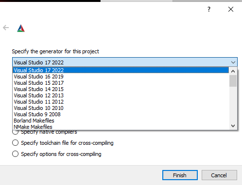
Cmake (C++/C) (15) (Windows Environment)¶
if you click "Configure" twice it will generate the visual studio solution in build folder
for more detailed examples that include also docker and travis-ci sample you can check the following repo
GitHub - ttroy50/cmake-examples: Useful CMake Examples
Make (1)¶
Sample
hello.c
Make (2)¶
Makefile
# This is the default target, which will be built when
# you invoke make
.PHONY: all
all: hello
# This rule tells make how to build hello from hello.cpp
hello: hello.c
g++ -o hello hello.c
# This rule tells make to copy hello to the binaries subdirectory,
# creating it if necessary
.PHONY: install
install:
mkdir -p binaries
cp -p hello binaries
# This rule tells make to delete hello and hello.o
.PHONY: clean
clean:
rm -f hello
Make (3)¶
compile.bat
will create hello.exe
check hello-make sample
Make (4)¶

JAVA Environment and Development¶

JDK and JRE Setup (1)¶

JDK and JRE Setup (2)¶
-
JDK (Java Development Kit) is a Kit that provides the environment to develop and execute(run) the Java program. JDK is a kit(or package) that includes two things
-
Development Tools(to provide an environment to develop your java programs)
-
JRE (to execute your java program).
-
JRE (Java Runtime Environment) is an installation package that provides an environment to only run(not develop) the java program(or application)onto your machine. JRE is only used by those who only want to run Java programs that are end-users of your system.
-
JVM (Java Virtual Machine) is a very important part of both JDK and JRE because it is contained or inbuilt in both. Whatever Java program you run using JRE or JDK goes into JVM and JVM is responsible for executing the java program line by line, hence it is also known as an **i*****nterpreter***.

System Environments and Paths for Java (1)¶

System Environments and Paths for Java (2)¶
- Select path variable (JDK should be set there)

System Environments and Paths for Java (3)¶
- JAVA_HOME also should be set
Netbeans (Java) (1)¶
- Open New Project -> Java Project

Netbeans (Java) (2)¶
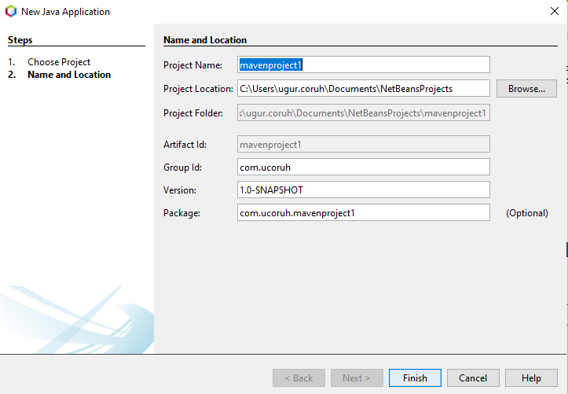
Netbeans (Java) (3)¶

Netbeans (Java) (4)¶

Netbeans (Java) (5)¶

Netbeans (Java) (6)¶
Update code and run

/*
* Click nbfs://nbhost/SystemFileSystem/Templates/Licenses/license-default.txt to change this license
* Click nbfs://nbhost/SystemFileSystem/Templates/Classes/Class.java to edit this template
*/
package com.ucoruh.mavenproject1;
/**
*
* @author ugur.coruh
*/
public class NewClass {
static //static block
{
System.out.println("Static block");
}
public static void main(String args[]) //static method
{
System.out.println("Static method");
}
}
Netbeans (Java) (7)¶

Netbeans (Java) (8)¶

Netbeans (Java) (9)¶

Netbeans (Java) (10)¶
Eclipse (Java) (1)¶
- Select File -> New Project

Eclipse (Java) (2)¶
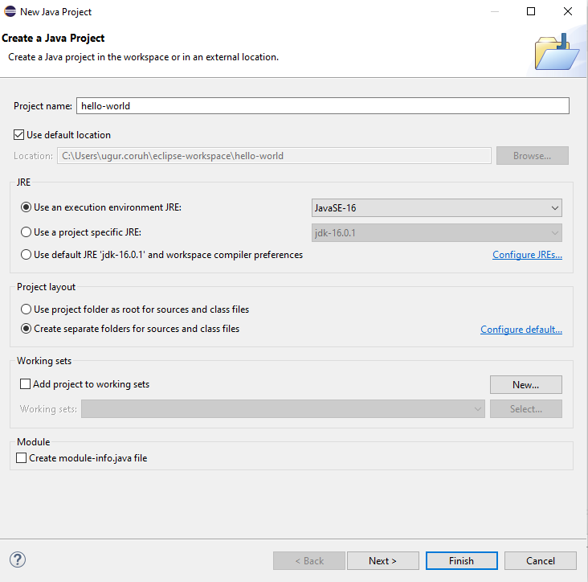
Eclipse (Java) (3)¶
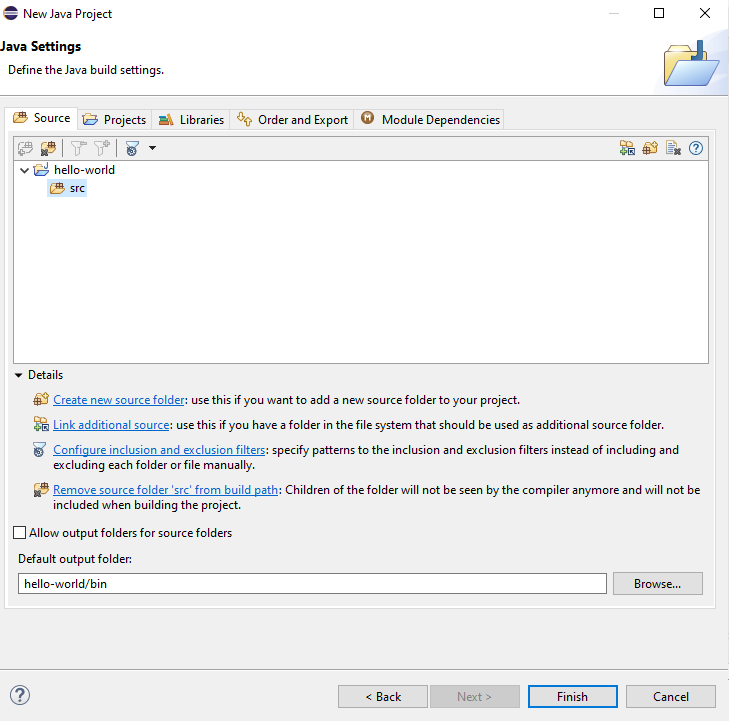
Eclipse (Java) (4)¶
Eclipse (Java) (5)¶
Eclipse (Java) (6)¶
- Update source
package ucoruh;
public class HelloClass {
static {
System.out.println("Static Block");
}
public static void main(String[] args) {
// TODO Auto-generated method stub
System.out.println("Static Method");
}
}
Eclipse (Java) (7)¶
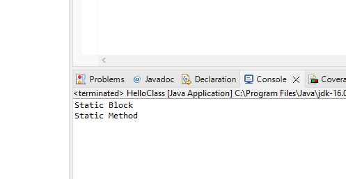
Eclipse (Java) (8)¶

Intellij Idea (Jet Brains) (Java)¶
-
Download IntelliJ IDEA: The Capable & Ergonomic Java IDE by JetBrains
-
Select Community Version or Student Ultimate Version

VSCode (Java)¶
- Java Extension Run&Debug Java Files

Notepad++ (Java)¶
Cmake (Java)¶
C# Environment and Development¶
Visual Studio Community Edition (C#)¶
//TODO//
Notepad++ (C#)¶
-
This use command-line utilities for csharp, nppexec should be configured for this utility.
-
Compiling/Executing a C# Source File in Command Prompt - Stack Overflow
c:\windows\Microsoft.NET\Framework\v3.5\bin\csc.exe
/t:exe /out:MyApplication.exe MyApplication.cs ...
Cmake (C#)¶
Common Tools and Platforms¶
Fatih Kalem¶

https://cdnvideo.eba.gov.tr/fatihkalem/fatihkalem_portable.zip
https://cdnvideo.eba.gov.tr/fatihkalem/fatihkalem_setup.exe

Notepad++ (Notepad for Source Code)¶

HxD (Hex Editor)¶

HxD - Freeware Hex Editor and Disk Editor | mh-nexus

Marktext (Markdown Syntax Editor)¶

- https://marktext.app/
- https://github.com/marktext/marktext/releases
- Download latest version
- https://github.com/marktext/marktext/releases/tag/v0.17.1

Cygwin (Linux environment for Windows)¶


Dependency Walker (32-bit or 64-bit Windows module dependency checker)¶


Doxygen (Code Documentation)¶

Sonarlint (Code Quality and Code Security Extension)¶

Codepen.io (online code sharing)¶
-
CodePen is a social development environment. At its heart, it allows you to write code in the browser, and see the results of it as you build.
-
A useful and liberating online code editor for developers of any skill, and particularly empowering for people learning to code. We focus primarily on front-end languages like HTML, CSS, JavaScript, and preprocessing syntaxes that turn into those things

Codepen.io (online code sharing)¶
- Credit Card Sample on Codepen
- https://codepen.io/quinlo/pen/YONMEa
- Checkout trends https://codepen.io/trending
Codeshare.io (real-time code sharing)¶

-
Share Code in Real-time with Developers, An online code editor for interviews, troubleshooting, teaching & more…

Codebeautify.org (online data conversion tools)¶

- Has several tools for developers (Code Formatter, JSON Beautifier, XML Viewer, Hex Converters and more...)
- https://codebeautify.org/
AsciiFlow.com (ASCII drawing tool)¶
-
Asciflow provides ascii based drawings that you can copy directly to textfiles and source codes. Visit the following link

Freemind (opensource mindmap application)¶
-
Freemind is open source java based desktop mindmap application. Can export files to several formats

Mockup Designers¶
-
Mockflow
-
Wireflow
PlantUML (software designer)¶
-
Text based designer for software engineers
-
-
Also visit course notes that related to plantuml CE204 Object-Oriented Programming - RTEU C204 Object Oriented Programming Course Notes
Drawio (drawing tool)¶
-
Online and Offline Drawing Tool
-
Offline Installer

Putty (Remote Connection)¶
- Commonly use for SSH connection

- We can run a SSH server with MobaXterm and can connect to same computer with Putty.

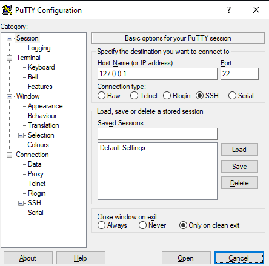
Download file over SSH Protocol¶
Here are some useful examples for downloading files from the remote system over SSH protocol.
- This will connect to example.com server with user “username” and copy the /backup/file.zip file to local system directory /local/dir. To use theis command replace the values as per your environment.
- If the SSH is running on a non-standard port, You can specify the port using
-Poption with SCP command.
- If your remote server required a private key to connect server, You can use
-ifollowed by a private key file path to connect your server using the SCP command. This can be helpful for AWS servers.
Upload file using SSH¶
You can also upload files to the remote server using SSH protocol using the SCP command. Use the following example command for uploading files to the SSH server.
Similarity you can use -P switch to define port of the SSH server and -i to define private key for the user authentication.
-
Also you can use SSH tunnels for remote code development
-
Developing on Remote Machines using SSH and Visual Studio Code
MobaXterm (Remote Connection)¶
- Multip Purpose Remote Connection Toolkit


Teamviewer (Remote Connection)¶
-
Remote connection tool
-
TeamViewer – Uzaktan Destek, Uzaktan Erişim, Hizmet Masası, Çevrimiçi İşbirliği ve Toplantılar
AnyDesk¶
-
Remote connection tool
Paletton.com and Colorhunt.co (Color Chooser)¶
-
Generates color pallettes and sample usages
-
Also check Colors Tutorial

Understand (Static Code Analysis)¶


JD Project (Java Decompiler)¶
-
Java Decompiler for Jar and Class Files, If code is not obfuscated it recover source code from compiled files. Just drag and drop files to GUI
-
You can use it standalone app or with eclipse

Cutter (Multi-Platform Reverse Engineering Tool)¶
-
Cutter's goal is to be an advanced FREE and open-source reverse-engineering platform while keeping the user experience at mind. Cutter is created by reverse engineers for reverse engineers.

IDA Pro / Freeware (Native Reverse Engineering Tool)¶
- IDA Pro as a disassembler is capable of creating maps of their execution to show the binary instructions that are actually executed by the processor in a symbolic representation (assembly language). Advanced techniques have been implemented into IDA Pro so that it can generate assembly language source code from machine-executable code and make this complex code more human-readable.
IDA Pro / Freeware (Native Reverse Engineering Tool)¶
IDA Pro / Freeware (Native Reverse Engineering Tool)¶

Code Visualization (Python, C , C++ , Java)¶
-
This coding tutor tool helps you learn Python, JavaScript, C, C++, and Java by visualizing code execution.
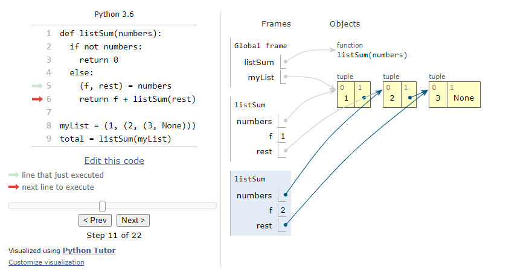
Assembly of C Code¶
-
Multilanguage supported. Convert source code to assembly codes

Mobile Device Screen Sharing for Demo¶
-
Show USB or Wifi connected Mobile Device Screen on PC and Provide Controls
-
GitHub - Genymobile/scrcpy: Display and control your Android device
-
Run
scrcpyfor single mobile phone.
Travis-CI¶
-
Travis-CI is a continues integration platform
-
Travis-CI free option removed for this reason, its not in our scope.
-
It uses Travis.yml files for actions.
AppVeyor¶
-
Another CI platform it has free option for public builds.
-
hello-world-nuget/appveyor.yml at master · Kimserey/hello-world-nuget · GitHub
Jenkins¶
-
Self-hosted solution for CI operations, Has integration with Github and several platforms.

Jenkins¶

Jenkins¶

Vagrant¶
-
Vagrant is a tool for building and managing virtual machine environments in a single workflow. With an easy-to-use workflow and focus on automation, Vagrant lowers development environment setup time, increases production parity, and makes the "works on my machine" excuse a relic of the past.
-
Setup Development Environment with Vagrant
-
development-environment/Vagrantfile at master · gantsign/development-environment · GitHub
Docker / Docker Compose / Kubernetes (1)¶
-
Docker takes away repetitive, mundane configuration tasks and is used throughout the development lifecycle for fast, easy and portable application development – desktop and cloud.
-
https://www.youtube.com/watch?v=nBwJm0onzeo&ab_channel=GaryExplains Dockerfile
-
DockerHub
-
Docker Compose Yaml
-
Dockerrun.aws.json (AWS)
Docker / Docker Compose / Kubernetes (2)¶
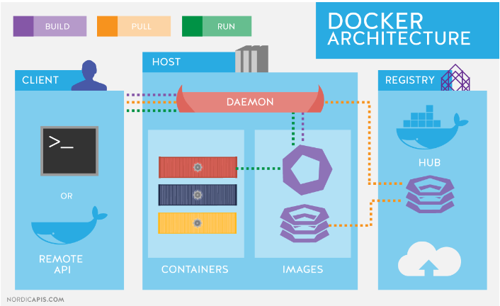
Docker / Docker Compose / Kubernetes (3)¶

Docker / Docker Compose / Kubernetes (4)¶

Docker / Docker Compose / Kubernetes (5)¶
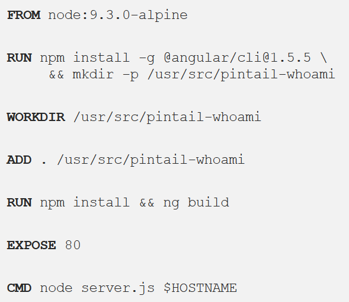
Docker / Docker Compose / Kubernetes (6)¶

Nuget Packages (1)¶
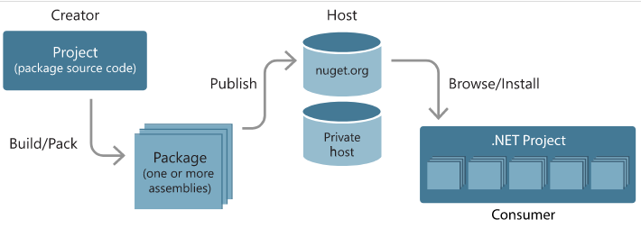
NuGet Tools (2)¶

Managing dependencies (3)¶

Tracking references and restoring packages (4)¶

SCV Cryptomanager¶
- SCV Crypto Manager has several tools for cryptographic operations.
- https://cryptomanager.com/download.php

Addario CryptoBench¶
- CryptoBench can be used for hash and symmetric asymmetric encryption-decryption operations.
- CryptoBench Download Page
- http://www.addario.org/files/CryptoBench%20v1.0.1.zip

Raymond's MD5 & SHA Checksum Utility¶
-
Hash Calculation Utility

SlavaSoft HashCalc¶
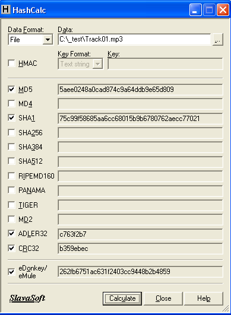
Portable PGP¶
-
Portable PGP uses for the generation of PGP keys to transfer files securely via e-mail or other channels. You can encrypt or sign your documents with this tool then the receiver can open or verify your e-mail.

Online Programming Envoriments¶
-
Hackerrank
-
CS50 Sandbox
-
Programiz C Online Complier